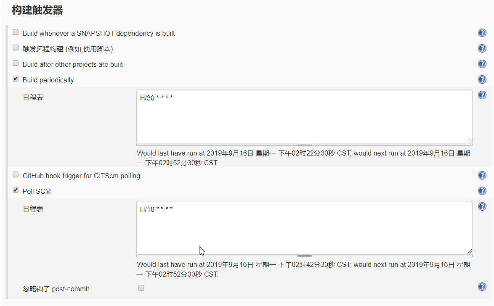

jenkins介绍
jenkins概念
Jenkins是一个开源的、可扩展的持续集成、交付、部署（软件/代码的编译、打包、部署）的基于web界面的平台。允许持续集成和持续交付项目，无论用的是什么平台，可以处理任何类型的构建或持续集成。
官网：https://jenkins.io/ 官方文档：https://jenkins.io/doc/
Jenkins特性
开源的java语言开发持续集成工具，支持CI，CD；
易于安装部署配置：可通过yum安装,或下载war包以及通过docker容器等快速实现安装部署，可方便web界面配置管理；
消息通知及测试报告：集成RSS/E-mail通过RSS发布构建结果或当构建完成时通过e-mail通知，生成JUnit/TestNG测试报告；
分布式构建：支持Jenkins能够让多台计算机一起构建/测试；
文件识别:Jenkins能够跟踪哪次构建生成哪些jar，哪次构建使用哪个版本的jar等；
丰富的插件支持:支持扩展插件，你可以开发适合自己团队使用的工具，如git，svn，maven，docker等。
需要的环境
maven、tomcat、git、jdk，将项目自动部署到linux系统下,演示的服务器上已经安装好git和jdk就不多做解释。
jenkins、git可与maven、tomcat、jdk放在不同服务器上。本次演示均放在同一个服务器上。
1. 安装maven
下载apache-maven-3.6.2-src.tar.gz，运行命令 tar -zxvf apache-maven-3.6.2-src.tar.gz /data/jenkins/maven,将文件解压到/data/jenkins/maven，修改conf文件夹下的settings.xml
<mirror>
<id>alimaven</id>
<mirrorOf>central</mirrorOf>
<name>aliyun maven</name>
<url>http://maven.aliyun.com/nexus/content/repositories/central/</url>
</mirror>2. 安装tomcat
本次需要两个tomcat(分别命名为tomcat8_jenkins,tomcat8_”项目名“，此处项目名为“test”)，一个用来部署jenkins的war包，一个用来部署需要构建的项目。
官网下载apache-tomcat-8.0.36.tar.gz，运行命令 tar -zxvf pache-tomcat-8.0.36.tar.gz /data/jenkins/tomcat/tomcat8_jenkins **,tar -zxvf pache-tomcat-8.0.36.tar.gz /data/jenkins/tomcat/tomcat8_“test”**。
分别修改两个tomcat的端口号防止端口占用，即修改tomcat中conf下server.xml文件如下
tomcat8_jenkins
<!--第一处改动--> <Server port="8079" shutdown="SHUTDOWN"> <!--第二处改动--> <Connector port="9100" protocol="HTTP/1.1" connectionTimeout="20000" redirectPort="8443" /> <!--第三处改动--> <Connector port="8009" protocol="AJP/1.3" redirectPort="8443" />tomcat8_test
<!--第一处改动--> <Server port="9006" shutdown="SHUTDOWN"> <!--第二处改动--> <Connector port="9797" protocol="HTTP/1.1" connectionTimeout="20000" redirectPort="8443" /> <!--第三处改动--> <Connector port="9010" protocol="AJP/1.3" redirectPort="8443" />3.修改tomcat8_jenkins中conf文件夹下的tomcat-users.xml文件，如下
<role rolename="tomcat"/> <role rolename="role1"/> <role rolename="manager-gui" /> <role rolename="manager-script" /> <role rolename="manager-status" /> <user username="tomcat" password="tomcat" roles="tomcat"/> <user username="both" password="tomcat" roles="tomcat,role1"/> <user username="role1" password="tomcat" roles="role1"/> <user username="deploy" password="tomcat" roles="manager-gui,manager-script,manager-status" />
安装jenkins
下载jenkins.war并放在/data/jenkins/tomcat/tomcat8_jenkins/webapps中，在tomcat8_jenkins中bin目录中运行./startup.sh启动tomcat8_jenkins。
配置jenkins
打开jenkins
在浏览器地址中输入http://服务器ip地址:9100/jenkins/，启动界面如下：
根据提示将相应文件中的文本复制然后粘贴到输入框中，点击继续，安装默认的插件，需要等待一段时间，若后续需要其他的插件可通过 ManagerJenkins —> ManagePlugins进行安装。
安装其他插件
若后续需要其他的插件可通过 ManagerJenkins —> ManagePlugins进行安装。
Deploy to container Plugin ， Email Extension Plugin ， Maven Integration plugin ， Publish Over SSH
配置GlobalToolConfiguration
点击ManagerJenkins —> GlobalToolConfiguration配置如下，实际路径以自己的为准。


配置ConfigureSystem
点击ManagerJenkins —> ConfigureSystem 配置如下几处
若未设置邮件地址，则构建后邮件通知功能失效
此处邮箱为POP3邮箱，直接输入邮箱密码即可
DefaultContent脚本为
<!DOCTYPE html>
<html>
<head>
<meta charset="UTF-8">
<title>${ENV, var="JOB_NAME"}-第${BUILD_NUMBER}次构建日志</title>
</head>
<body leftmargin="8" marginwidth="0" topmargin="8" marginheight="4"
offset="0">
<table width="95%" cellpadding="0" cellspacing="0"
style="font-size: 11pt; font-family: Tahoma, Arial, Helvetica, sans-serif">
<tr>
<td>
<h2>
<font>来自Mr.Jenkins的邮件通知</font>
</h2>
</td>
</tr>
<tr>
<td>
<br />
<b><font color="#0B610B">构建信息</font></b>
<hr size="2" width="100%" align="center" />
</td>
</tr>
<tr>
<td>
<ul>
<li>项目名称 ： ${PROJECT_NAME}</li>
<li>触发原因 ：${CAUSE}</li>
<li>
构建日志 ：
<a href="${BUILD_URL}console">
${BUILD_URL}console
</a>
</li>
<li>
单元测试报告 ：
<a href="${BUILD_URL}testReport/">
${BUILD_URL}testReport/
</a>
</li>
<li>
测试报告 ：
<a href="${PROJECT_URL}ws">
${PROJECT_URL}ws/trunk/code/LopWeb/target/site/surefire-report.html
</a>
</li>
<li>
覆盖率报告 ：
<a href="${PROJECT_URL}ws/trunk/code/LopWeb/target/site/jacoco/index.html">
${PROJECT_URL}ws
</a>
</li>
<li>
工作目录 ：
<a href="${PROJECT_URL}ws">
${PROJECT_URL}ws
</a>
</li>
</ul>
</td>
</tr>
<tr>
<td><b><font color="#0B610B">构建日志:</font></b>
<hr size="2" width="100%" align="center" /></td>
</tr>
<tr>
<td><textarea cols="80" rows="30" readonly="readonly"
style="font-family: Courier New">${BUILD_LOG}</textarea>
</td>
</tr>
</table>
<div>
<table>
<tr>
<th><br />
<h2>覆盖率报告</h2>
</th>
</tr>
<tr>
<td>
<div>${FILE ,path="C:/Program Files (x86)/Jenkins/workspace/
DOM/trunk/code/LopWeb/target/site/jacoco/index.html"}</div>
</td>
</tr>
</table>
</div>
</body>
</html>通过SSH将Jenkins从svn拉取的代码通过maven打包war发送到远程服务器进行部署
创建并配置项目
- 接着创建一个maven项目（若没有此选项，则需在jenkins下载maven插件）
- 配置svn地址

- 构建触发器：
Build periodically：周期性进行项目构建，这个是到指定的时间必须触发构建任务,此处设为每三十分钟
Poll SCM:定时检查源码变更（根据SCM软件的版本号），如果有更新就checkout最新code下来，然后执行构建动作，此处设为每十分钟检查一次

- PreSteps:
构建前先执行如下命令，未设置 chmod 777 restart-tomcat8.sh 脚本会执行失败。
脚本内容如下：
#/bin/bash
#这一句必须得有，不然会执行失败，路径根据实际情况配置
export JAVA_HOME=/data/jdk1.8.0_161
#先删除tomcat下之前打的war包及其解压包
rm -rf /data/jenkins/tomcat/tomcat8/webapps/LopWeb*
echo -e "\n\n\n"
#force kill flag,if equal [f] to force kill all
flag="HelloShell"
if test $# -gt 0
then
flag=$1
fi
pids=`ps -ef|grep tomcat8 | grep -v "grep" | awk '{print $2}'`
#pids=`ps -ef|grep -w tomcat | grep -v "grep" | awk '{print $2}'`
count=0
pid_num=0
for pid in ${pids}
do
pid_num=${pid}
count=`expr ${count} + 1`
done
if test $[count] -gt 1
then
if test $flag = "f"
then
for pid in ${pids}
do
echo "kill " ${pid}
kill -9 ${pid}
done
echo "Force kill more progress success!"
else
echo "Exist more progress is running, Input param [f] to force kill."
fi
else
if test $[count] -eq 1
then
kill -9 ${pid_num}
echo "Kill " ${pid_num} " Success!"
else
echo "Clear!"
fi
fi
# start
echo "start tomcat8"
bash /data/jenkins/tomcat/tomcat8/bin/startup.sh
echo -e "\n\n\n"
Build
RootPOM：项目中pom.xml地址。
Goals and options:目的是maven 打包执行的命令。mvn surefire-report:report 作用是生成代码测试报告。若需要生成测试报告则需要在项目pom.xml文件中加入如下配置：
<plugin> <groupId>org.apache.maven.plugins</groupId> <artifactId>maven-surefire-plugin</artifactId> <version>3.0.0-M3</version> <configuration> <testFailureIgnore>true</testFailureIgnore> <!-- 限定跑哪些测试类 --> <includes> <!-- "**/Test*.java" - includes all of its subdirectories and all Java filenames that start with "Test". --> <!-- "**/*Test.java" - includes all of its subdirectories and all Java filenames that end with "Test". --> <include>**/*Test.java</include> <!-- 支持正则 http://maven.apache.org/surefire/ maven-surefire-plugin/examples/inclusion-exclusion.html--> <!-- <include>%regex[.*(Cat|Dog).*Test.*]</include> --> </includes> </configuration> </plugin>构建后操作
设置项目打包后发布的容器地址

设置构建后邮箱通知，点击下方圈红按钮设置触发条件

运行项目
点击BuildNow，第一次运行maven需要下载jar文件，所以会比较慢。
邮件内容如下

构建失败的一些问题
Caused by: org.codehaus.cargo.container.tomcat.internal.TomcatManagerException:
The Tomcat Manager responded "FAIL - Deployed application at context path [/LopWeb]
but context failed to start
" instead of the expected "OK" message
此问题在构建成功，发布到容器时报的错误，一般是项目的问题，此实验为项目数据库未连接成功导致的，
具体情况可根据数据库日志查看[ERROR] Failed to execute goal on project LopWeb:
Could not resolve dependencies for project com.asiainfo.lop:LopWeb:war:1.0-SNAPSHOT:
The following artifacts could not be resolved:
com.ibm.db2:db2jcc:jar:9.7, com.ibm.db2:db2java:jar:9.7:
Failure to find com.ibm.db2:db2jcc:jar:9.7 in
http://192.168.1.8:8081/repository/maven-public was cached in the local repository,
resolution will not be reattempted until the update interval of asiaInfomaven has
elapsed or updates are forced -> [Help 1]
缺少相应的jar包ERROR: Error fetching remote repo 'origin'
hudson.plugins.git.GitException:
Failed to fetch from ssh://git@10.*.*.106:22022/DOM/LopWeb.git
连接公司项目git可能需要内网，开启vpn即可